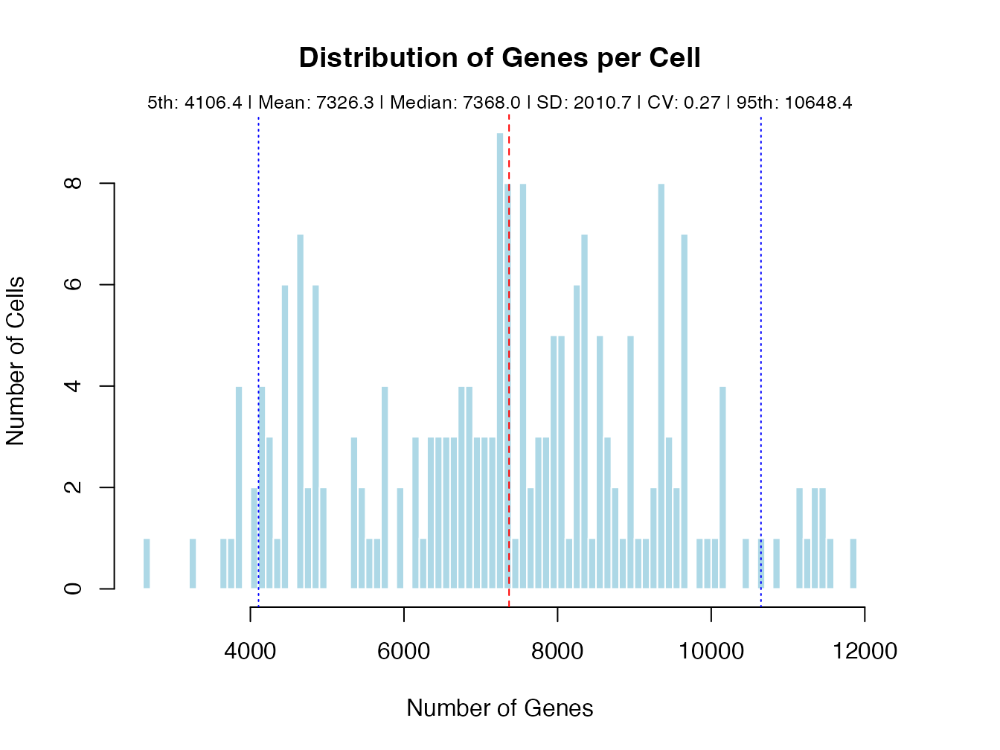
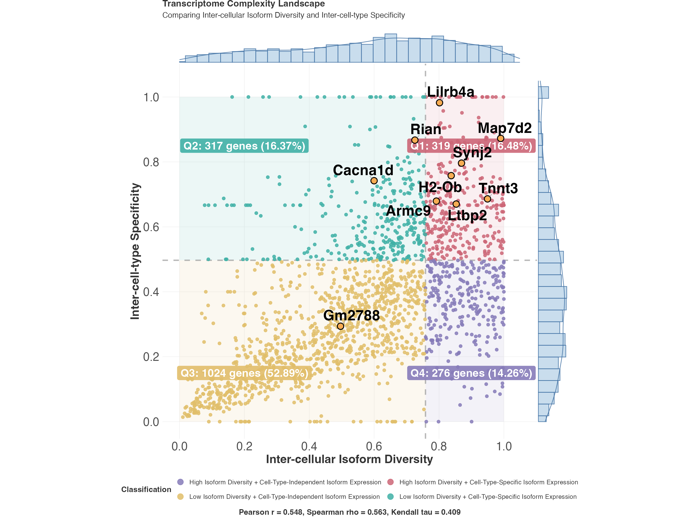

Getting Started with ScIsoX
Siyuan Wu & Ulf Schmitz
2025-08-01
Source:vignettes/vignette-01-getting-started.Rmd
vignette-01-getting-started.RmdIntroduction
ScIsoX is a comprehensive R package for analysing transcriptomic complexity at single-cell resolution using isoform-level expression data. This vignette will guide you through the basic workflow of ScIsoX, from data import to initial complexity analysis.
Installation
# Install from GitHub
devtools::install_github("ThaddeusWu/ScIsoX")
# Load the package
library(ScIsoX)Understanding the Data Structure
ScIsoX works with four main data inputs:
- Gene counts matrix: Gene-level expression (genes × cells)
- Transcript counts matrix: Isoform-level expression (transcripts × cells)
- Transcript information: Mapping between transcripts and genes
- Cell type annotation: Cell type information
Loading Example Data
ScIsoX comes with example data from blood cells:
# Load example datasets
data(gene_counts_blood)
data(transcript_counts_blood)
data(transcript_info)
data(sample2stage)
# Examine data dimensions
cat("Gene counts:", dim(gene_counts_blood), "\n")
#> Gene counts: 55487 205
cat("Transcript counts:", dim(transcript_counts_blood), "\n")
#> Transcript counts: 142238 205
cat("Transcript info:", dim(transcript_info), "\n")
#> Transcript info: 278305 6
cat("Cell info:", dim(sample2stage), "\n")
#> Cell info: 203 2Data Format Requirements
# Gene counts format
gene_counts_blood[1:5, 1:3]
#> AEC-1-AEC-1-1_FKDL202561884-1a-1
#> ENSMUSG00000000001 2
#> ENSMUSG00000000003 0
#> ENSMUSG00000000028 0
#> ENSMUSG00000000031 6242
#> ENSMUSG00000000037 0
#> AEC-1-AEC-1-2_FKDL202561884-1a-2
#> ENSMUSG00000000001 0
#> ENSMUSG00000000003 0
#> ENSMUSG00000000028 13
#> ENSMUSG00000000031 13584
#> ENSMUSG00000000037 0
#> AEC-1-AEC-1-3_FKDL202561884-1a-3
#> ENSMUSG00000000001 10
#> ENSMUSG00000000003 0
#> ENSMUSG00000000028 0
#> ENSMUSG00000000031 3790
#> ENSMUSG00000000037 0
# Transcript counts format
transcript_counts_blood[1:5, 1:3]
#> AEC-1-AEC-1-1_FKDL202561884-1a-1
#> ENSMUST00000193812 0
#> ENSMUST00000082908 0
#> ENSMUST00000162897 0
#> ENSMUST00000159265 0
#> ENSMUST00000070533 0
#> AEC-1-AEC-1-2_FKDL202561884-1a-2
#> ENSMUST00000193812 0
#> ENSMUST00000082908 0
#> ENSMUST00000162897 0
#> ENSMUST00000159265 0
#> ENSMUST00000070533 0
#> AEC-1-AEC-1-3_FKDL202561884-1a-3
#> ENSMUST00000193812 0
#> ENSMUST00000082908 0
#> ENSMUST00000162897 0
#> ENSMUST00000159265 0
#> ENSMUST00000070533 0
# Transcript info format
head(transcript_info, 3)
#> transcript_id transcript_name gene_id
#> ENSMUST00000193812 ENSMUST00000193812 4933401J01Rik-201 ENSMUSG00000102693
#> ENSMUST00000082908 ENSMUST00000082908 Gm26206-201 ENSMUSG00000064842
#> ENSMUST00000162897 ENSMUST00000162897 Xkr4-203 ENSMUSG00000051951
#> gene_name transcript_type gene_type
#> ENSMUST00000193812 4933401J01Rik TEC TEC
#> ENSMUST00000082908 Gm26206 snRNA snRNA
#> ENSMUST00000162897 Xkr4 protein_coding_CDS_not_defined protein_coding
# Cell info format (optional but recommended)
head(sample2stage, 3)
#> sample cell_type
#> 1 AEC-1-AEC-1-1_FKDL202561884-1a-1 AEC
#> 2 AEC-1-AEC-1-2_FKDL202561884-1a-2 AEC
#> 3 AEC-1-AEC-1-3_FKDL202561884-1a-3 AECQuality Control
Before creating the SCHT structure, it’s important to perform quality control:
# Visualise genes per cell distribution
qc_plot <- plot_genes_per_cell_distribution(
gene_counts_blood,
plot_type = "hist",
return_suggestions = TRUE
)
# Get automated QC recommendations
qc_recommendations <- recommend_qc_parameters(gene_counts_blood)
# View different QC strategies
print("Conservative (MAD) strategy:")
#> [1] "Conservative (MAD) strategy:"
print(qc_recommendations$MAD_strategy)
#> $min_genes_per_cell
#> [1] 980
#>
#> $max_genes_per_cell
#> [1] 13756
print("\nModerate (90% interval) strategy:")
#> [1] "\nModerate (90% interval) strategy:"
print(qc_recommendations$Interval_90)
#> $min_genes_per_cell
#> [1] 4106
#>
#> $max_genes_per_cell
#> [1] 10648Creating the SCHT Object
The Single-Cell Hierarchical Tensor (SCHT) is the core data structure in ScIsoX:
# Create SCHT with recommended parameters
scht_obj <- create_scht(
gene_counts = gene_counts_blood,
transcript_counts = transcript_counts_blood,
transcript_info = transcript_info,
cell_info = sample2stage,
qc_params = list(
min_genes_per_cell = 4000,
max_genes_per_cell = 10000,
min_cells_expressing = 0.02,
min_expr = 1e-6
),
n_hvg = 3000,
verbose = TRUE
)
#> Matrix format after log transform:
#> class(gene_mat) = dgCMatrix
#> dim(gene_mat) = 17881, 181
#> class(transcript_mat) = dgCMatrix
#> dim(transcript_mat) = 142238, 181
#>
#> === Sparsity Analysis for Current Dataset ===
#>
#> 1. Original Transcript Matrix:
#> Number of genes: 55,487
#> Number of isoforms: 142,238
#> Number of cells: 205
#> Non-zero elements: 2,457,789
#> Zero elements: 26,701,001
#> Total elements: 29,158,790
#> Sparsity: 91.57%
#>
#> 2. Filtered Transcript Matrix (Post-QC HVG):
#> Number of genes: 1,936
#> Number of isoforms: 7,327
#> Number of cells: 181
#> Non-zero elements: 73,057
#> Zero elements: 1,253,130
#> Total elements: 1,326,187
#> Sparsity: 94.49%
#>
#> 3. SCHT Structure (Post-QC HVG):
#> Non-zero elements: 73,057
#> Zero elements: 154,780
#> Total elements: 227,837
#> Sparsity: 67.93%
#>
#> 4. Naive 3D Tensor (Post-QC HVG):
#> Required dimensions: 1,936 x 21 x 181
#> Non-zero elements: 73,057
#> Zero elements: 7,285,679
#> Total elements: 7,358,736
#> Sparsity: 99.01%
#>
#> 5. Zero Elements Avoided by SCHT:
#> vs Original Matrix: 26,546,221
#> vs Filtered Matrix: 1,098,350
#> vs Naive 3D Tensor: 7,130,899
#>
#> 6. Memory Efficiency Summary:
#> SCHT uses only 0.78% of original matrix size
#> SCHT uses only 17.18% of filtered matrix size
#> SCHT uses only 3.10% of naive tensor size
# View SCHT structure
print(scht_obj)
#> Integrated SCHT Object
#> =====================
#>
#> Original SCHT:
#> Single-Cell Hierarchical Tensor (SCHT) object
#> Number of genes: 1936
#> Number of cells: 181
#> Total number of transcripts: 7327
#> Mean isoforms per gene: 3.78
#> Overall sparsity: 67.9 %
#> Matrix storage type: matrix
#>
#> Cell type-specific analysis:
#> Number of cell types: 7
#> Cell Types: AEC, HEC, T1_pre_HSC, T2_pre_HSC, E12, E14, Adult_HSC
#>
#> Created: 2025-08-01 03:12:35
summary(scht_obj)
#> Integrated SCHT Summary
#> ======================
#>
#> Original SCHT Summary:
#> ----------------------
#> SCHT Object Summary:
#> --------------------
#> Cells: 181
#> Genes: 1936
#> Total transcripts: 7327
#> Mean isoforms: 3.78
#>
#> Preprocessing Info:
#> HVGs selected: 3000
#> QC-filtered genes: 37606
#> QC-filtered transcripts: 0
#> QC-filtered cells: 24
#>
#> Data characteristics:
#> Sparsity: 67.9%
#> Created: 2025-08-01 03:12:31
#>
#> Cell type-specific Summary:
#> ----------------------
#> cell_type n_genes n_cells
#> 1 AEC 1385 18
#> 2 HEC 1383 24
#> 3 T1_pre_HSC 1638 26
#> 4 T2_pre_HSC 1531 38
#> 5 E12 1361 21
#> 6 E14 1262 32
#> 7 Adult_HSC 1346 44
#>
#> Performance metrics:
#> Total processing time: 31.91 seconds (0.53 minutes)
#> Memory utilised: 183.40 MB
#>
#> Note: The actual number of cells for each gene may vary from the shown n_cells,
#> as cells with no expression for specific genes are removed from their respective matrices.
#> This cell-wise filtering is performed independently for each gene to maintain data quality
#> and avoid spurious zero expressions in the cell type-specific analyses.Calculating Complexity Metrics
ScIsoX calculates seven core metrics to quantify transcriptomic complexity:
# Calculate all complexity metrics
tc_results <- calculate_isoform_complexity_metrics(
scht_obj,
verbose = TRUE
)
# View results structure
print(tc_results)
#> Isoform Complexity Analysis Result
#> =================================
#>
#> Total genes analysed: 1936
#> Classification thresholds determined by: data-driven modelling
#>
#> Top complexity classes:
#> 1. Low Diversity + Low Specificity: 1024 genes (52.9%)
#> 2. High Diversity + High Specificity: 319 genes (16.5%)
#> 3. Low Diversity + High Specificity: 317 genes (16.4%)
#> 4. High Diversity + Low Specificity: 276 genes (14.3%)
#>
#> Call summary() for detailed statistics
# Summary statistics
summary(tc_results)
#> Isoform Complexity Analysis Summary:
#> Total genes analysed: 1936
#>
#> NA Value Statistics (representing biologically meaningful cases):
#> - Intra-cellular Isoform Diversity : 0 genes (0.0%) - Occurs when genes have only one expressed isoform, indicating lack of alternative splicing
#> - Inter-cellular Isoform Diversity : 0 genes (0.0%) - Occurs when only one isoform is expressed across the entire cell population
#> - Intra-cell-type Heterogeneity : 163 genes (8.4%) - Occurs when a cell type has insufficient cells expressing the gene (< 3 cells)
#> - Inter-cell-type Specificity : 0 genes (0.0%) - Occurs for genes expressed in only a single cell type (high cell type-specificity)
#> - Intra-cell-type Heterogeneity Variability: 492 genes (25.4%) - Occurs when a gene is expressed in fewer than 2 cell types with sufficient data
#> - Inter-cell-type Difference Variability: 137 genes (7.1%) - Occurs when there are insufficient pairwise differences between cell types to calculate variability
#> - Cell-type-specific Co-expression Variability: 184 genes (9.5%) - Occurs when a gene lacks sufficient cell type-specific expression data to compare co-expression patterns
#>
#> Classification Distribution Across Complexity Dimensions:
#>
#> Intra-cellular Isoform Diversity:
#> - Strong Isoform Co-expression : 704 genes (36.4%)
#> - Weak Isoform Co-expression : 1232 genes (63.6%)
#>
#> Inter-cellular Isoform Diversity:
#> - High Isoform Diversity : 595 genes (30.7%)
#> - Low Isoform Diversity : 1341 genes (69.3%)
#>
#> Intra-cell-type Heterogeneity:
#> - High Cellular Heterogeneity : 819 genes (42.3%)
#> - Low Cellular Heterogeneity : 954 genes (49.3%)
#> - Unclassified : 163 genes (8.4%)
#>
#> Inter-cell-type Specificity:
#> - Cell-Type-Independent Isoform Expression: 1300 genes (67.1%)
#> - Cell-Type-Specific Isoform Expression : 636 genes (32.9%)
#>
#> Intra-cell-type Heterogeneity Variability:
#> - Consistent Heterogeneity Across Cell Types: 892 genes (46.1%)
#> - Insufficient Cell Type Data : 492 genes (25.4%)
#> - Variable Heterogeneity Across Cell Types: 552 genes (28.5%)
#>
#> Inter-cell-type Difference Variability:
#> - High Cell-Type Distinctions : 943 genes (48.7%)
#> - Insufficient Difference Data : 137 genes (7.1%)
#> - Low Cell-Type Distinctions : 856 genes (44.2%)
#>
#> Cell-type-specific Co-expression Variability:
#> - Cell-Type-Adaptive Co-expression : 596 genes (30.8%)
#> - Cell-Type-Consistent Co-expression : 1156 genes (59.7%)
#> - Insufficient Data : 184 genes (9.5%)
#>
#> Traditional Complexity Categories:
#> - High Diversity + High Specificity : 319 genes (16.5%)
#> - High Diversity + Low Specificity : 276 genes (14.3%)
#> - Low Diversity + High Specificity : 317 genes (16.4%)
#> - Low Diversity + Low Specificity : 1024 genes (52.9%)
#>
#> Cell-Type-Specific Genes:
#> - Single cell-type genes : 23 genes (1.2%)
#>
#> Core Metrics Statistics:
#>
#>
#> |Metric | Mean| Median| SD| Min| Max| Threshold| NA_Percent|
#> |:--------------------------------------------|-----:|------:|-----:|----:|-----:|---------:|----------:|
#> |Intra-cellular Isoform Diversity | 0.351| 0.321| 0.270| 0.00| 0.991| 0.456| 0.000|
#> |Inter-cellular Isoform Diversity | 0.591| 0.630| 0.257| 0.01| 1.000| 0.758| 0.000|
#> |Intra-cell-type Heterogeneity | 0.363| 0.367| 0.230| 0.00| 1.000| 0.389| 8.419|
#> |Inter-cell-type Specificity | 0.401| 0.382| 0.230| 0.00| 1.000| 0.497| 0.000|
#> |Intra-cell-type Heterogeneity Variability | 0.770| 0.620| 0.625| 0.00| 2.646| 0.832| 25.413|
#> |Inter-cell-type Difference Variability | 0.646| 0.567| 0.342| 0.00| 1.620| 0.552| 7.076|
#> |Cell-type-specific Co-expression Variability | 1.032| 0.972| 0.702| 0.00| 2.646| 1.389| 9.504|
#>
#> Performance metrics:
#> Processing time: 83.82 seconds (1.40 minutes)
#> Memory utilised: 975.63 MBBasic Visualisation
Visualise the complexity landscape:
# Create complexity landscape plot
plot_tc_landscape(
tc_results,
n_label = 10
)
Finding Genes of Interest
Identify genes with specific complexity patterns:
# Find highly complex genes
complex_genes <- tc_results$metrics[
tc_results$metrics$intra_cellular_isoform_diversity_class == "Strong Isoform Co-expression" &
tc_results$metrics$inter_cellular_isoform_diversity_class == "High Isoform Diversity",
]
print(paste("Found", nrow(complex_genes), "highly complex genes"))
#> [1] "Found 384 highly complex genes"
head(complex_genes[, c("gene", "n_isoforms",
"intra_cellular_isoform_diversity",
"inter_cellular_isoform_diversity")])
#> gene n_isoforms intra_cellular_isoform_diversity
#> Cd177 Cd177 2 0.8339576
#> S100a8 S100a8 2 0.7979806
#> S100a9 S100a9 2 0.7408728
#> Il7 Il7 4 0.7749878
#> Nup62cl Nup62cl 2 0.8197578
#> Crb3 Crb3 4 0.6215834
#> inter_cellular_isoform_diversity
#> Cd177 0.9015444
#> S100a8 0.9042768
#> S100a9 0.9078688
#> Il7 0.8055326
#> Nup62cl 0.9041507
#> Crb3 0.9335333
# Find genes with cell type-specific patterns
ct_specific <- select_genes_of_interest(
tc_results$metrics,
category = "Cell-Type-Specific Isoform Expression",
top_n = 10
)
print(ct_specific)
#> [1] "Cd177" "S100a8" "S100a9" "Shtn1" "Ceacam10" "Oas3"
#> [7] "Il7" "Nup62cl" "Cideb" "Ctss"Next Steps
This vignette covered the basic workflow of ScIsoX. For more advanced analyses, see:
- Data Import and QC: Detailed quality control strategies
- Complexity Metrics: In-depth explanation of all seven metrics
- Visualisation Gallery: All 13+ visualisation functions
- Co-expression Analysis: Isoform relationships and switching
Session Information
sessionInfo()
#> R version 4.4.3 (2025-02-28)
#> Platform: aarch64-apple-darwin20
#> Running under: macOS Sequoia 15.5
#>
#> Matrix products: default
#> BLAS: /Library/Frameworks/R.framework/Versions/4.4-arm64/Resources/lib/libRblas.0.dylib
#> LAPACK: /Library/Frameworks/R.framework/Versions/4.4-arm64/Resources/lib/libRlapack.dylib; LAPACK version 3.12.0
#>
#> locale:
#> [1] en_US.UTF-8/en_US.UTF-8/en_US.UTF-8/C/en_US.UTF-8/en_US.UTF-8
#>
#> time zone: Australia/Brisbane
#> tzcode source: internal
#>
#> attached base packages:
#> [1] stats graphics grDevices utils datasets methods base
#>
#> other attached packages:
#> [1] ScIsoX_1.1.1
#>
#> loaded via a namespace (and not attached):
#> [1] bitops_1.0-9 gridExtra_2.3
#> [3] rlang_1.1.6 magrittr_2.0.3
#> [5] clue_0.3-66 GetoptLong_1.0.5
#> [7] ggridges_0.5.6 matrixStats_1.5.0
#> [9] compiler_4.4.3 png_0.1-8
#> [11] systemfonts_1.2.1 vctrs_0.6.5
#> [13] pkgconfig_2.0.3 shape_1.4.6.1
#> [15] crayon_1.5.3 fastmap_1.2.0
#> [17] XVector_0.46.0 labeling_0.4.3
#> [19] promises_1.3.3 Rsamtools_2.22.0
#> [21] rmarkdown_2.29 UCSC.utils_1.2.0
#> [23] ragg_1.4.0 purrr_1.1.0
#> [25] xfun_0.52 zlibbioc_1.52.0
#> [27] cachem_1.1.0 GenomeInfoDb_1.42.3
#> [29] jsonlite_2.0.0 progress_1.2.3
#> [31] later_1.4.2 DelayedArray_0.32.0
#> [33] BiocParallel_1.40.0 parallel_4.4.3
#> [35] prettyunits_1.2.0 cluster_2.1.8.1
#> [37] R6_2.6.1 bslib_0.9.0
#> [39] RColorBrewer_1.1-3 rtracklayer_1.66.0
#> [41] car_3.1-3 GenomicRanges_1.58.0
#> [43] jquerylib_0.1.4 diptest_0.77-1
#> [45] Rcpp_1.1.0 SummarizedExperiment_1.36.0
#> [47] iterators_1.0.14 knitr_1.50
#> [49] IRanges_2.40.1 httpuv_1.6.16
#> [51] Matrix_1.7-3 tidyselect_1.2.1
#> [53] viridis_0.6.5 rstudioapi_0.17.1
#> [55] abind_1.4-8 yaml_2.3.10
#> [57] miniUI_0.1.1.1 doParallel_1.0.17
#> [59] codetools_0.2-20 curl_6.4.0
#> [61] lattice_0.22-6 tibble_3.3.0
#> [63] plyr_1.8.9 withr_3.0.2
#> [65] shiny_1.11.1 Biobase_2.66.0
#> [67] evaluate_1.0.4 moments_0.14.1
#> [69] desc_1.4.3 circlize_0.4.16
#> [71] mclust_6.1.1 Biostrings_2.74.1
#> [73] pillar_1.11.0 MatrixGenerics_1.18.1
#> [75] carData_3.0-5 DT_0.33
#> [77] foreach_1.5.2 stats4_4.4.3
#> [79] plotly_4.11.0 generics_0.1.4
#> [81] RCurl_1.98-1.16 S4Vectors_0.44.0
#> [83] hms_1.1.3 ggplot2_3.5.2
#> [85] scales_1.4.0 xtable_1.8-4
#> [87] glue_1.8.0 lazyeval_0.2.2
#> [89] tools_4.4.3 BiocIO_1.16.0
#> [91] data.table_1.17.8 ggradar_0.2
#> [93] GenomicAlignments_1.42.0 fs_1.6.6
#> [95] XML_3.99-0.18 cowplot_1.2.0
#> [97] grid_4.4.3 tidyr_1.3.1
#> [99] colorspace_2.1-1 patchwork_1.3.0
#> [101] GenomeInfoDbData_1.2.13 restfulr_0.0.15
#> [103] Formula_1.2-5 cli_3.6.5
#> [105] textshaping_1.0.0 S4Arrays_1.6.0
#> [107] viridisLite_0.4.2 ComplexHeatmap_2.22.0
#> [109] dplyr_1.1.4 gtable_0.3.6
#> [111] sass_0.4.10 digest_0.6.37
#> [113] BiocGenerics_0.52.0 ggrepel_0.9.6
#> [115] SparseArray_1.6.2 rjson_0.2.23
#> [117] htmlwidgets_1.6.4 farver_2.1.2
#> [119] htmltools_0.5.8.1 pkgdown_2.1.3
#> [121] lifecycle_1.0.4 httr_1.4.7
#> [123] mime_0.13 GlobalOptions_0.1.2
#> [125] ggExtra_0.10.1 MASS_7.3-65